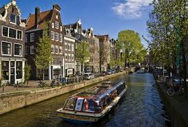
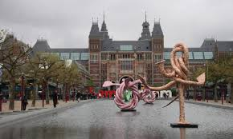
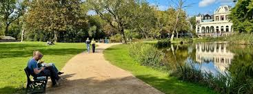
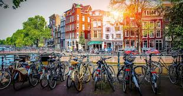
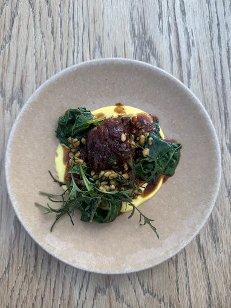
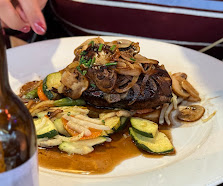

Amsterdam é conhecida mundialmente por seu transporte sustentável, principalmente pelo uso de bicicletas. A cidade possui canais históricos, grandes áreas verdes e políticas ambientais que incentivam energia limpa e mobilidade urbana sustentável.

Os famosos canais de Amsterdam fazem parte do patrimônio mundial da UNESCO.

Museumplein, área cultural com alguns dos museus mais importantes da Europa.

Vondelpark, o parque urbano mais famoso da cidade.

Infraestrutura de ciclovias considerada uma das melhores do mundo.

Restaurantes com culinária holandesa moderna e sustentável.

Cafés e restaurantes que utilizam ingredientes orgânicos locais.